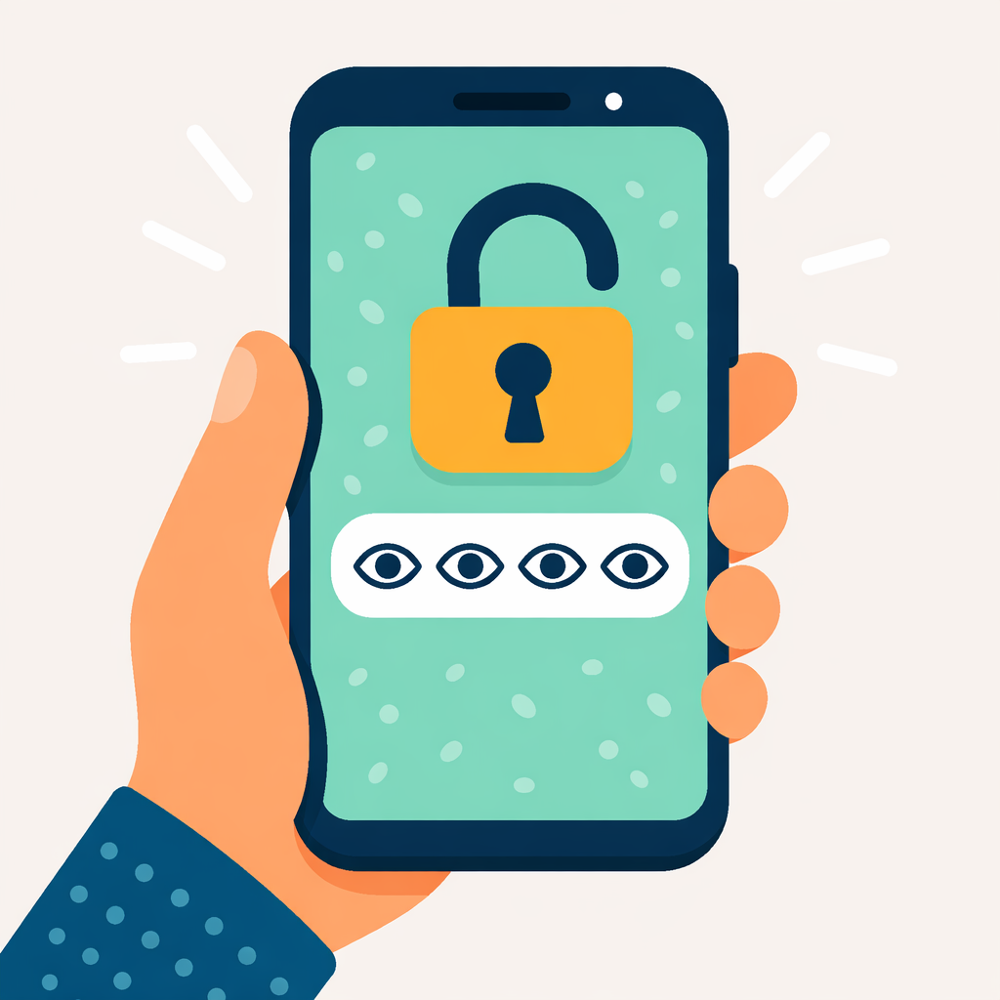

Click on one of my eyes to enter or escape full screen.

Did you know that leaving your phone unlocked can expose your sensitive information to potential threats?
Protecting your phone is essential to maintaining your privacy and security. Always remember to lock your phone when not in use.